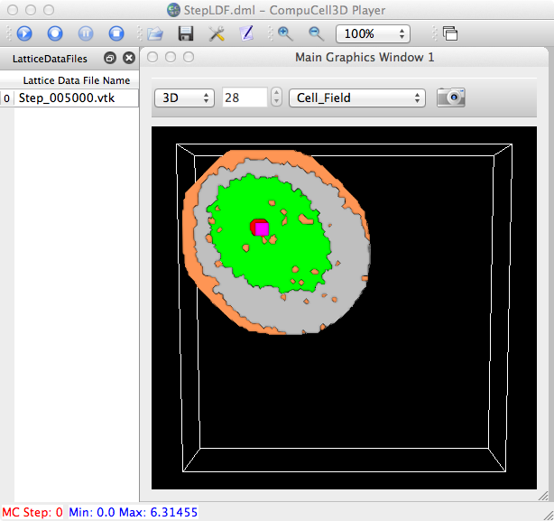
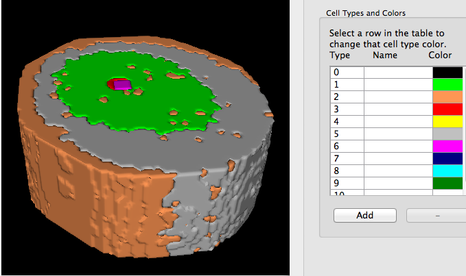
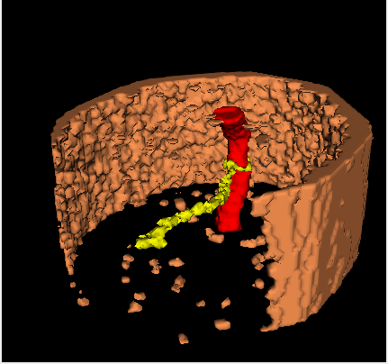
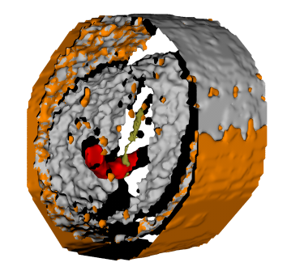
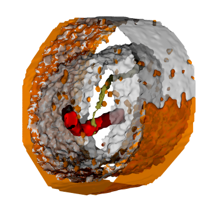
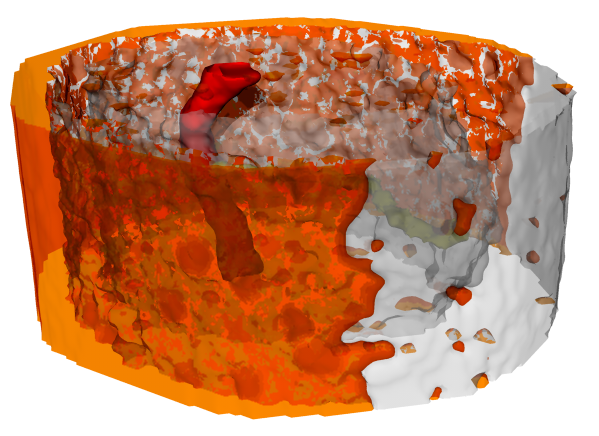

Another look at doing semi-transparent 3D contours, e.g. using vtkDiscreteMarchingCubes on celltype fields (rf. 3D_cells).
 
If we do not render cell type 1,5,6 (and 0, of course).
~/Documents/Glazier/Abbas/2012-Sep$ ty renCellTypes.py
# renCellTypes.py
# Sample usage: python renCellTypes.py Step_005000 cells.dat 200
import vtk
#from vtk.util.numpy_support import numpy_to_vtk, vtk_to_numpy
import sys
import string
argc = len(sys.argv)
#print 'argc=',argc
if argc < 4:
print 'Usage: ',sys.argv[0],' <root-filename[without .vtk]> <celltype-filename> smoothIters '
raise ValueError, 'Too few input args'
idx=1
root_fname = sys.argv[idx]
print 'root_fname=',root_fname
idx=idx+1
celltype_fname = sys.argv[idx]
idx=idx+1
smoothIters = string.atoi(sys.argv[idx])
cellTypeDict = {}
cellTypeColorDict = {}
fp = open(celltype_fname, 'r')
print '--------- cell params -------'
for line in fp:
items=line.split()
print items
cellTypeDict[int(items[0])] = []
cellTypeColorDict[int(items[0])] = [float(items[1]),float(items[2]),float(items[3])]
print 'cellTypeDict=',cellTypeDict
print 'cellTypeColorDict=',cellTypeColorDict
ren1 = vtk.vtkRenderer()
ren1.SetBackground(1,1,1)
renWin = vtk.vtkRenderWindow()
renWin.AddRenderer(ren1)
iren = vtk.vtkRenderWindowInteractor()
iren.SetRenderWindow(renWin)
reader = vtk.vtkDataSetReader()
reader.SetFileName(root_fname + '.vtk')
#--------------------
aax0 = vtk.vtkAssignAttribute()
aax0.SetInputConnection(reader.GetOutputPort())
aax0.Assign("CellType","SCALARS","POINT_DATA")
updateFlag = True
if updateFlag:
aax0.Update()
typeRange = aax0.GetOutput().GetScalarRange()
print 'CellType range: ',typeRange # CellId: (748.0, 725445.0); CellType: (1.0, 2.0)
#-------------------
aax = vtk.vtkAssignAttribute()
aax.SetInputConnection(reader.GetOutputPort())
#aax.Assign("CellId","SCALARS","POINT_DATA")
aax.Assign("CellType","SCALARS","POINT_DATA")
if updateFlag:
aax.Update()
srange = aax.GetOutput().GetScalarRange()
print 'range (all): ',srange
cont_type = []
smoother = []
normals = []
mapper = []
actor = []
# ------- loop over all requested cell types:
for cellTypeCount in range(len(cellTypeDict)):
print 'cellTypeCount=', cellTypeCount
cellType = cellTypeDict.keys()[cellTypeCount]
cont_type.append(vtk.vtkDiscreteMarchingCubes())
cont_type[cellTypeCount].SetInputConnection(aax.GetOutputPort())
cont_type[cellTypeCount].SetValue(0, cellType) # NB! set 0th since each DMC obj is unique!
smoother.append(vtk.vtkSmoothPolyDataFilter())
smoother[cellTypeCount].SetInputConnection(cont_type[cellTypeCount].GetOutputPort())
smoother[cellTypeCount].SetNumberOfIterations(smoothIters)
smoother[cellTypeCount].FeatureEdgeSmoothingOff() # default 'off'
normals.append( vtk.vtkPolyDataNormals())
normals[cellTypeCount].SetInputConnection(smoother[cellTypeCount].GetOutputPort())
mapper.append( vtk.vtkDataSetMapper())
mapper[cellTypeCount].SetInputConnection(normals[cellTypeCount].GetOutputPort())
mapper[cellTypeCount].ScalarVisibilityOff()
actor.append(vtk.vtkActor())
actor[cellTypeCount].SetMapper(mapper[cellTypeCount])
actor[cellTypeCount].GetProperty().SetColor(cellTypeColorDict[cellType]) # red, green, blue
ren1.AddActor(actor[cellTypeCount])
#----------------------
outline = vtk.vtkOutlineFilter()
outline.SetInputConnection(reader.GetOutputPort())
mapOutline = vtk.vtkPolyDataMapper()
mapOutline.SetInputConnection(outline.GetOutputPort())
outlineActor = vtk.vtkActor()
outlineActor.SetMapper(mapOutline)
outlineActor.GetProperty().SetColor(0, 0, 0)
ren1.AddActor(outlineActor)
#------------------
renWin.SetSize(512,512)
cam = ren1.GetActiveCamera()
renWin.Render()
ren1.ResetCamera()
#cam.Elevation(40.0)
degRot = 40
cam.Azimuth(degRot) # Elevation would spin about X
w2i = vtk.vtkWindowToImageFilter()
w2i.SetInput(renWin)
iw = vtk.vtkPNGWriter()
iw.SetInput(w2i.GetOutput())
iw.SetFileName(root_fname+".png")
#print root_fname,', # unique cells=',len(unique_cell_ids)
#iw.Write()
povexp = vtk.vtkPOVExporter()
povexp.SetRenderWindow(renWin)
povexp.SetFileName("abbas.pov")
#povexp.Write()
iren.Start() # don't invoke this if running from ipython
where:
~/Documents/Glazier/Abbas/2012-Sep$ ty cells.dat 2 1 0.5 0 3 1 0 0 4 0.57 0.56 0.18 5 0.75 0.75 0.75
 
In the resulting POVRay (.pov) file, we manually edit the "f" (alpha?) value in the "color rgbf" vector of the (mesh2) texture field so that it has a non-zero value for semi-transparency.
texture {
pigment {
color rgbf <0.750000, 0.750000, 0.750000 0.500000>
It seems that you will also need to edit the camera and light sources:
camera {
perspective
location <284.98934504140317, 16.92853013326669, 113.5>
sky <-0.31235223345260094, 0.07857987088630208, 0.946>
right <-1, 0, 0>
angle 30.000000
look_at <72.99826123062287, 57.635458724622836, 20.0>
...
light_source {
<287.000000, 54.000000, 231.000000>
color <1.000000, 1.000000, 1.000000>*1.000000
parallel
point_at <75.000000, 61.000000, 47.000000>
using the values from:
In [3]: cam.GetPosition() Out[3]: (454.22707114645755, 99.5, 447.2472614292127) In [4]: cam.GetFocalPoint() Out[4]: (99.5, 99.5, 24.5)
